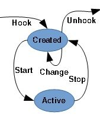
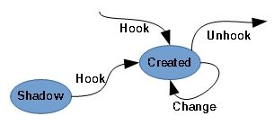

The IRPMon driver represents each hooked object or device by a hook record. Since the current version of the driver is able to monitor only two kinds of objects, two types of hook records exist:
Each driver hook record describes one driver object. If that driver gets unloaded and its driver object is deleted, the driver hook record also disappears. At the code level, each driver hook record is represented by one DRIVER_HOOK_RECORD structure.
A driver hook record contains the following information:
Figure 1 shows state diagram of a driver hook record. The record is created by performing a hook operation on the target driver. The record acquires information about the driver (its driver object and name) and details about what types of request need to be captured. The record enters the Created state. The driver object is not hooked in any way (no callback routines present within the driver object are redirected to the IRPMon driver).
When the user wishes to start monitoring, it performs a Start operation on the driver hook record. Callback routines present within the driver object are redirected to the IRPMon driver. See the Request Monitoring chapter to get detailed information about the hooking process and actions the IRPMon driver performs to record incoming requests.
When in Started state, the user cannot modify monitoring settings of the driver hook record because these settings affects hooking of the target driver object. To change the settings, the user must perform the Stop operation on the record. The operation returns the record to the Created state from where the Change operation can be performed.
The Unhook operation destroys the drive hook record. It can be performed only when the record is in the Created state (the target driver object is not hooked). When a driver hook record is destroyed, all device hook records associated with it are also destroyed (the Unhook operation is performed on them).

Figure 1: Driver hook record state diagram
Device hook records are quite simpler than the driver hook ones. They contain only information about the target device object and arrays of boolean values indicating which types of IRP and Fast IO requests the user wishes to monitor. Each device hook record is represented by single DEVICE_HOOK_RECORD structure. State diagram for device hook records can be seen in Figure 2.
A device hook record is created when the user expresses her wish to monitor requests targeted at certain device object. The record is fully initialized into the Created state and monitoring may start at once. There is nothing similar to the Active state of the driver record, the monitoring on device hook record occurs in the Created state. Each device hook record contains a boolean variable indicating whether monitoring is enabled, however, value of the variable does not restrict operations with the record in any way. Monitored types of IRP and fast IO operations can be adjusted even when monitoring is enabled, since the IRPMon driver always redirects all IRP callbacks and all available fast IO callbacks of the target driver (the driver with which the device is associated).
Device hook record may also enter the Shadow state. Circumstances of this event are explained in the New Devices part.

Figure 2: Device hook record state diagram
If a driver hook record is configured to monitor newly created devices of the target driver, the IRPMon driver enumerates all device objects associated with that driver and creates a device hook record for each. The device hook records are initialized to the Shadow state; they are only used to record device objects existing when the monitoring of new devices was enabled.
If the IRPMon driver catches a request coming from a device object, associated with the target driver, for which no device hook record (even in Shadow state) exists, such a device object is treated as newly created device. The IRPMon driver automatically creates a device hook record for it, initializes it to the Created state, so the device starts being monitored.